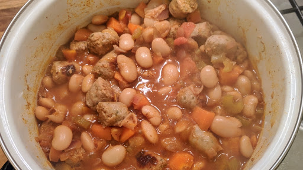

Spiced bean & banger stew
Ingredients
- 6 sausages, cut into chunks
- 50 ml olive oil
- 4 cloves of garlic, finely chopped
- 3 celerys stalks, sliced
- 3 small red onions, finely chopped
- 2 tbsp tomato puree
- 2 carrots, thinly sliced
- 1 tsp salt
- 2 tomatoes, chopped
- 1 tsp paprika
- 1 tsp ground cinnamon
- 3 x 400 g tins butter beans, drained and rinsed
- 500 ml water (or chicken stock)
- handful of fresh parsley, finely chopped
Instructions
- Use a large casserole or heavy-based pan and place on a medium heat. Add the chunks of sausage and cook, stirring occasionally, making sure they are fully cooked through.
- Take the sausage pieces out of the pan, leaving the pan on the heat and setting the sausages aside in a bowl.
- Add the olive oil and garlic to the pan and cook for a few minutes. Now add the celery, red onions, tomato puree, carrots, salt and tomatoes. Cook on a medium heat for 12-15 minutes.
- Add the paprika and cinnamon to the sauce and let the spices cook for 5 minutes.
- Add the beans, water and the cooked sausage, put a lid on the pan, and cook on a medium to low heat for 45-50 minutes. Once cooked through, the whole stew will have thickened significantly.
- Take off the heat and stir in the chopped parsley.